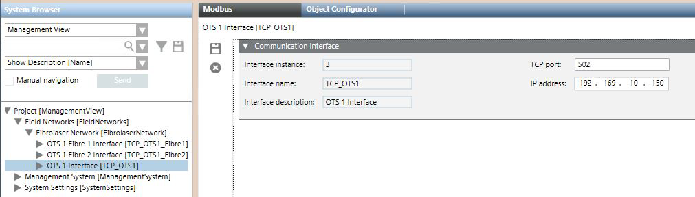

Modifying the Fibrolaser Communication Settings
When integrating the Fibrolaser III heat detection system using the Modbus TCP protocol, after the import of the configuration file, you can modify the communication settings (TCP port and IP address) of the communication interface.
- System Manager is in Engineering mode.
- In System Browser, select Management View.
- in System Browser, select Project > Field Networks > [Fibrolaser network] > [OTS interface].
- In the Modbus tab, open the Communication Interface expander.
- Modify the values in the fields TCP port or IP address.
- Click Save
 .
.


OTS panel and OTS fibres settings
In case you need to change the communication settings for a Fibrolaser system, you have to modify the OTS panel and OTC fibres settings with the same values.